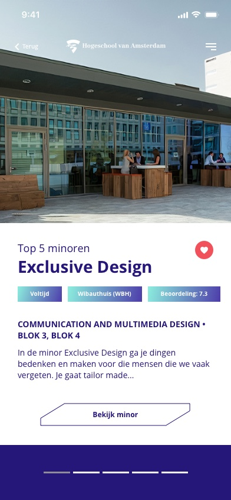
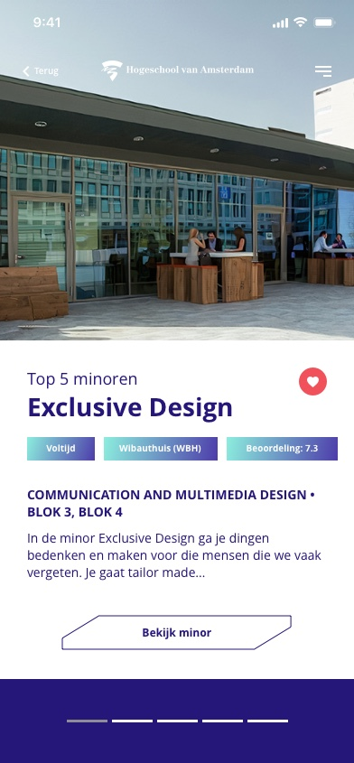
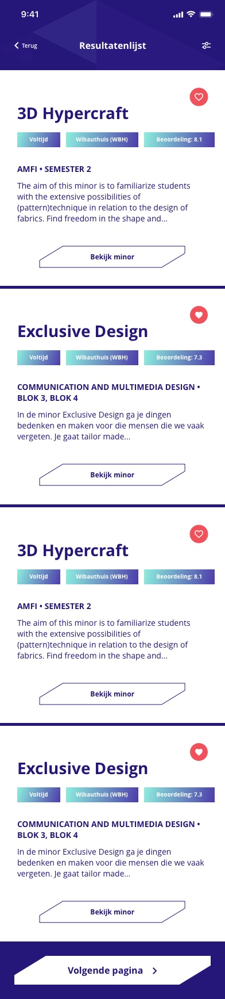
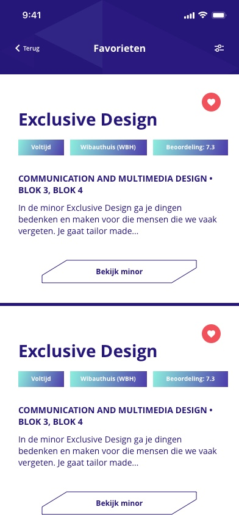
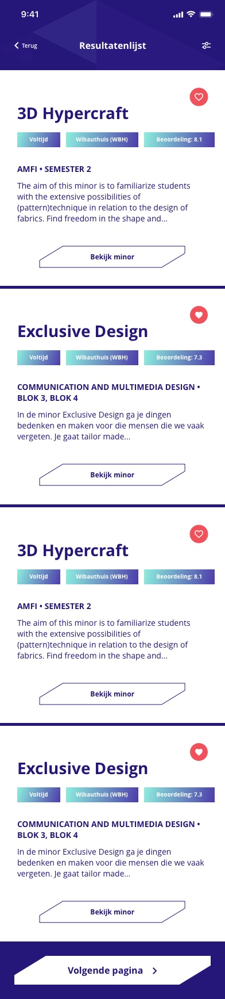
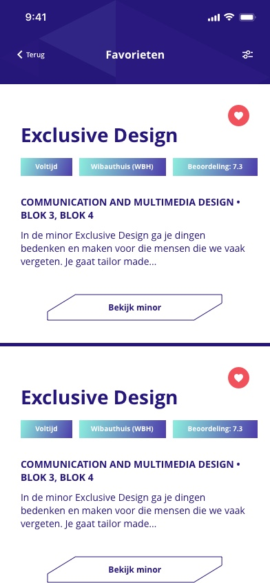

Minor Selector - Webdesign
During this project I worked with a team of 4 people to redesign the minor selector tool of the University of Applied Science, that helps students with making the choice of which minor to follow.
This project was part of the subject I chose called Redesigning the User Experience. We had half a year to complete this project. This redesign will be implemented by the University of Applied Sciences.
This project is in Dutch.


 

 


